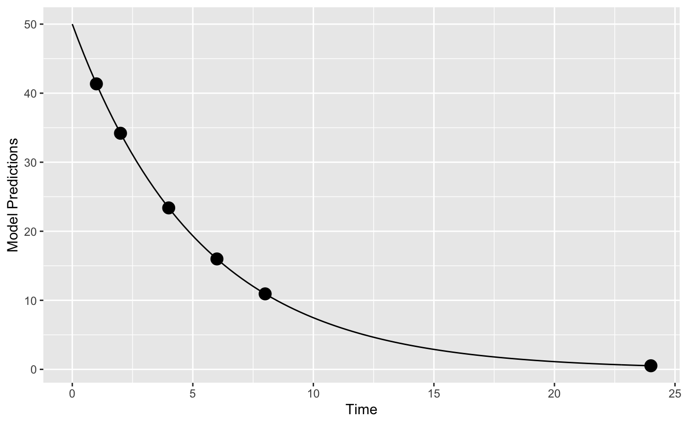
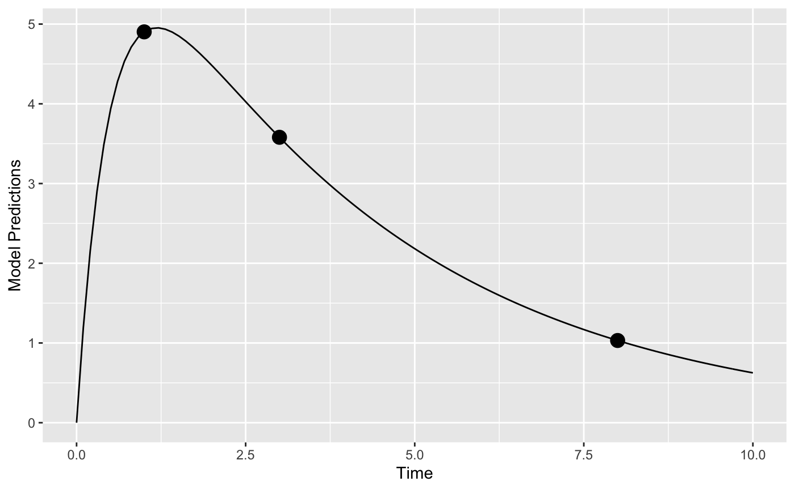

Examples
Giulia Lestini, Martin Fink and Andrew Hooker
13 September, 2019
Source:vignettes/examples.Rmd
examples.RmdIntroduction
In this vignette, we try to highlight PopED features that may be useful. Only code related to specific features we would like to highlight is described here in this vignette. These features (and more) are presented as r-scripts in the “examples” folder in the PopED installation directory. You can view a list of these example files using the commands:
ex_dir <- system.file("examples", package="PopED")
list.files(ex_dir)
#> [1] "ex.1.a.PK.1.comp.oral.md.intro.R"
#> [2] "ex.1.b.PK.1.comp.oral.md.re-parameterize.R"
#> [3] "ex.1.c.PK.1.comp.oral.md.ODE.compiled.R"
#> [4] "ex.10.PKPD.HCV.compiled.R"
#> [5] "ex.11.PK.prior.R"
#> [6] "ex.12.covariate.distributions.R"
#> [7] "ex.13.shrinkage.R"
#> [8] "ex.14.PK.IOV.R"
#> [9] "ex.15.full.covariance.matrix.R"
#> [10] "ex.2.a.warfarin.evaluate.R"
#> [11] "ex.2.b.warfarin.optimize.R"
#> [12] "ex.2.c.warfarin.ODE.compiled.R"
#> [13] "ex.2.d.warfarin.ED.R"
#> [14] "ex.2.e.warfarin.Ds.R"
#> [15] "ex.3.a.PKPD.1.comp.oral.md.imax.D-opt.R"
#> [16] "ex.3.b.PKPD.1.comp.oral.md.imax.ED-opt.R"
#> [17] "ex.4.PKPD.1.comp.emax.R"
#> [18] "ex.5.PD.emax.hill.R"
#> [19] "ex.6.PK.1.comp.oral.sd.R"
#> [20] "ex.7.PK.1.comp.maturation.R"
#> [21] "ex.8.tmdd_qss_one_target_compiled.R"
#> [22] "ex.9.PK.2.comp.oral.md.ode.compiled.R"
#> [23] "HCV_ode.c"
#> [24] "HCV_ode.o"
#> [25] "HCV_ode.so"
#> [26] "one_comp_oral_CL.c"
#> [27] "one_comp_oral_CL.o"
#> [28] "one_comp_oral_CL.so"
#> [29] "tmdd_qss_one_target.c"
#> [30] "tmdd_qss_one_target.o"
#> [31] "tmdd_qss_one_target.so"
#> [32] "two_comp_oral_CL.c"
#> [33] "two_comp_oral_CL.o"
#> [34] "two_comp_oral_CL.so"You can then open one of the examples (for example, ex.1.a.PK.1.comp.oral.md.intro.R) using the following code
file_name <- "ex.1.a.PK.1.comp.oral.md.intro.R"
ex_file <- system.file("examples",file_name,package="PopED")
file.copy(ex_file,tempdir(),overwrite = T)
file.edit(file.path(tempdir(),file_name))The table below provides a check list of features for each of the available examples.
| Features | Ex1 | Ex2 | Ex3 | Ex4 | Ex5 | Ex6 | Ex7 | Ex8 | Ex9 | Ex10 | Ex11 | Ex12 | Ex13 | Ex14 | Ex15 |
|---|---|---|---|---|---|---|---|---|---|---|---|---|---|---|---|
| Analytical model | X | X | X | X | X | X | X | - | - | - | X | X | X | X | X |
| ODE model and doses | X | X | - | - | - | X | - | X | X | X | - | - | - | - | - |
| Irregular dosing | - | - | - | - | - | - | - | - | - | - | - | - | - | - | - |
| Full cov matrix W | - | - | - | - | - | - | - | - | - | - | - | - | - | - | X |
| Inter-occ variability | - | - | - | - | - | - | - | - | - | - | - | - | - | X | - |
| Discrete covariates | - | - | - | - | - | - | X | - | - | - | X | - | - | - | - |
| Continuous covariates | X | X | X | X | - | X | X | X | X | X | X | X | X | X | X |
| Multiple arms | X | - | X | X | - | - | X | X | - | - | X | X | - | X | - |
| Multi response models | - | - | X | X | - | - | - | X | - | X | - | - | - | - | - |
| Designs differ across responses |
- | - | - | X | - | - | - | X | - | - | - | - | - | - | - |
| Calculate precision of derived parameters |
- | - | - | - | - | - | - | - | - | - | - | - | - | - | - |
| Power calculation | - | - | - | - | - | - | - | - | - | - | X | - | - | - | - |
| Include previous FIM | - | - | - | - | - | - | - | - | - | - | X | - | - | - | - |
| Shrinkage/Bayesian FIM | X | X | X | X | - | - | X | - | - | X | - | - | X | - | - |
| Discrete optimization | X | X | X | - | - | X | - | X | - | - | - | - | - | X | - |
| Optimization of more-group designs (same response) |
X | - | X | X | - | - | X | X | - | - | - | - | - | X | - |
| Different optimal sampling times between groups |
- | - | - | - | - | - | - | - | - | - | - | - | - | - | - |
| Optimization with constraining sampling times |
X | - | X | - | - | - | - | - | - | - | - | - | - | X | - |
| Optimization of subjects per group |
- | - | - | - | - | - | - | - | - | - | - | - | - | - | - |
Analytical solution PKPD model with 2 groups/arms; setup only
The full code for this example is available in ex.4.PKPD.1.comp.emax.R.
Define the PKPD model: Here we define a PKPD mode using analytical equations. The PK is a one compartment model with intravenus bolus administration and linear elimination. The PD is an ordinary Emax model driven by the PK concentrations. The expected output of each measurement (PK or PD) is given in the vector model_switch (see below for details).
library(PopED)
f_pkpdmodel <- function(model_switch,xt,parameters,poped.db){
with(as.list(parameters),{
y=xt
MS <- model_switch
# PK model
CONC = DOSE/V*exp(-CL/V*xt)
# PD model
EFF = E0 + CONC*EMAX/(EC50 + CONC)
y[MS==1] = CONC[MS==1]
y[MS==2] = EFF[MS==2]
return(list( y= y,poped.db=poped.db))
})
}The error model also has to accommodate both response models.
## -- Residual Error function
## -- Proportional PK + additive PD
f_Err <- function(model_switch,xt,parameters,epsi,poped.db){
returnArgs <- do.call(poped.db$model$ff_pointer,list(model_switch,xt,parameters,poped.db))
y <- returnArgs[[1]]
poped.db <- returnArgs[[2]]
MS <- model_switch
prop.err <- y*(1+epsi[,1])
add.err <- y+epsi[,2]
y[MS==1] = prop.err[MS==1]
y[MS==2] = add.err[MS==2]
return(list( y= y,poped.db =poped.db ))
}Some of the parameters are assumed to have log-normal distributions in the population.
Define design and design space
We specify in the poped.db object the vector model_switch in order to assign the sampling times written in the vector xt to the PK (=1) or PD (=2) model.
poped.db <- create.poped.database(ff_fun=f_pkpdmodel,
fError_fun=f_Err,
fg_fun=f_etaToParam,
sigma=diag(c(0.15,0.015)),
bpop=c(CL=0.5,V=0.2,E0=1,EMAX=1,EC50=1),
d=c(CL=0.09,V=0.09,E0=0.04,EC50=0.09),
groupsize=20,
m=3,
xt=c( 0.33,0.66,0.9,5,0.1,1,2,5),
minxt=0,
maxxt=5,
bUseGrouped_xt=1,
model_switch=c(1,1,1,1,2,2,2,2),
a=list(c(DOSE=0),c(DOSE=1),c(DOSE=2)),
maxa=c(DOSE=10),
mina=c(DOSE=0))The model predictions below show typical PK and PD profiles for three dose groups. The initial design, as shown in the poped.db object, consists of 3 arms with doses of 0, 1, and 2 mg; PK sampling times are 0.33, 0.66, 0.9, and 5 hours/days; PD sampling times are 0.1, 1, 2, and 5 hours/days. With model.names=c("PK","PD") one can name the outputs in the graph.
plot_model_prediction(poped.db,IPRED=TRUE,DV=TRUE,facet_scales="free",
separate.groups=TRUE,
model.names=c("PK","PD")) 
ODE solution of PK model and multiple dose dosing scheme; design evaluation
The full code for this example is available in ex.9.PK.2.comp.oral.md.ode.compiled.R.
In this example, the deSolve library needs to be installed for computing solutions to a system of differential equations. For faster solutions one can use pre-compiled code using the Rcpp library.
Define the system using ODEs
Here we define the two compartment model in R using deSolve notation
PK.2.comp.oral.ode <- function(Time, State, Pars){
with(as.list(c(State, Pars)), {
dA1 <- -KA*A1
dA2 <- KA*A1 + A3* Q/V2 -A2*(CL/V1+Q/V1)
dA3 <- A2* Q/V1-A3* Q/V2
return(list(c(dA1, dA2, dA3)))
})
}Now we define the initial conditions of the ODE system A_ini with a named vector, in this case all compartments are initialized to zero c(A1=0,A2=0,A3=0). The dosing input is defined as a data.frame eventdat referring to the named compartment var = c("A1"), the specified dose_times and value=c(DOSE) dose amounts. Note that the covariates DOSE and the regimen TAU can differ by arm and be optimized (as shown in ex.1.a.PK.1.comp.oral.md.intro.R). For more information see the help pages for ?deSolve::ode and ?deSolve::events.
ff.PK.2.comp.oral.md.ode <- function(model_switch, xt, parameters, poped.db){
with(as.list(parameters),{
A_ini <- c(A1=0, A2=0, A3=0)
times_xt <- drop(xt)
dose_times = seq(from=0,to=max(times_xt),by=TAU)
eventdat <- data.frame(var = c("A1"),
time = dose_times,
value = c(DOSE), method = c("add"))
times <- sort(c(times_xt,dose_times))
# Here "PK.2.comp.oral.ode" is equivalent to the pre-compiled version "two_comp_oral_ode_Rcpp".
out <- ode(A_ini, times, PK.2.comp.oral.ode, parameters,
events = list(data = eventdat))#atol=1e-13,rtol=1e-13)
y = out[, "A2"]/(V1/Favail)
y=y[match(times_xt,out[,"time"])]
y=cbind(y)
return(list(y=y,poped.db=poped.db))
})
}The parameter definition function should match the parameters used in the above two functions.
Define design and design space
We now create a PopED database. The ff_fun should now point to the function providing the solution of the ODE.
discrete_a <- cell(2,1)
poped.db <- create.poped.database(ff_fun="ff.PK.2.comp.oral.md.ode",
fError_fun="feps.add.prop",
fg_fun="fg",
groupsize=20,
m=1, #number of groups
sigma=c(prop=0.1^2,add=0.05^2),
bpop=c(CL=10,V1=100,KA=1,Q= 3.0, V2= 40.0, Favail=1),
d=c(CL=0.15^2,KA=0.25^2),
notfixed_bpop=c(1,1,1,1,1,0),
xt=c( 48,50,55,65,70,85,90,120),
minxt=0,
maxxt=144,
discrete_xt = list(0:144),
a=c(DOSE=100,TAU=24),
maxa=c(DOSE=1000,TAU=24),
mina=c(DOSE=0,TAU=8),
discrete_a = list(DOSE=seq(0,1000,by=100),TAU=8:24))Plot intial design (just PRED)
We plot the initial design

Faster computations with Rcpp
We could also define the system using Rcpp, which will produce compiled code that should run faster (further examples in ex.2.c.warfarin.ODE.compiled.R). First we redefine the ODE system using Rcpp.
cppFunction('List two_comp_oral_ode_Rcpp(double Time, NumericVector A, NumericVector Pars) {
int n = A.size();
NumericVector dA(n);
double CL = Pars[0];
double V1 = Pars[1];
double KA = Pars[2];
double Q = Pars[3];
double V2 = Pars[4];
dA[0] = -KA*A[0];
dA[1] = KA*A[0] - (CL/V1)*A[1] - Q/V1*A[1] + Q/V2*A[2];
dA[2] = Q/V1*A[1] - Q/V2*A[2];
return List::create(dA);
}')Next we solve this system of ODEs using deSolve.
Finally we create a poped database to use these functions by updating the previously created database.
Design evaluation
We can compare the time for design evaluation with these two methods of describing the same model.
tic(); eval <- evaluate_design(poped.db); toc()
#> Elapsed time: 2.537 seconds.
tic(); eval <- evaluate_design(poped.db.Rcpp); toc()
#> Elapsed time: 1.258 seconds.The difference is noticeable and gets larger for more complex and lengthy ODE models.
ODE solution for TMDD model with 2 outputs, arms with either single sc or iv dose, and different number of sampling times per arm
The full code for this example is available in ex.8.tmdd_qss_one_target_compiled.R.
Compile code using Rcpp for the TMDD model is as follows.
Define the parameters and the distributions of those parameters.
In the function that defines the dosing and derives the ODE solution, the discrete covariate SC_FLAG is used to give the dose either into A1 or A2, the sub-cutaneous or the IV compartment.
tmdd_qss_one_target_model_compiled <- function(model_switch,xt,parameters,poped.db){
with(as.list(parameters),{
y=xt
#The initialization vector for the compartment
A_ini <- c(A1=DOSE*SC_FLAG,
A2=DOSE*(1-SC_FLAG),
A3=0,
A4=R0)
#Set up time points for the ODE
times_xt <- drop(xt)
times <- sort(times_xt)
times <- c(0,times) ## add extra time for start of integration
# solve the ODE
out <- ode(A_ini, times, tmdd_qss_one_target_model_ode, parameters)#,atol=1e-13,rtol=1e-13)
# extract the time points of the observations
out = out[match(times_xt,out[,"time"]),]
# Match ODE output to measurements
RTOT = out[,"A4"]
CTOT = out[,"A2"]/V1
CFREE = 0.5*((CTOT-RTOT-KSSS)+sqrt((CTOT-RTOT-KSSS)^2+4*KSSS*CTOT))
COMPLEX=((RTOT*CFREE)/(KSSS+CFREE))
RFREE= RTOT-COMPLEX
y[model_switch==1]= RTOT[model_switch==1]
y[model_switch==2] =CFREE[model_switch==2]
#y[model_switch==3]=RFREE[model_switch==3]
return(list( y=y,poped.db=poped.db))
})
}Finally we define the residual unexplained variability model.
Define the design
Two different sub-studies are defined, with different sampling times per arm - in terms of total number of samples and the actual times1. Due to this difference in numbers and the relatively complicated study design we define the sample times (xt) what each sample time will meansre (model_switch) and which samples should be taken at the same study time (G_xt) as matricies. Here three variables xt, model_switch, and G_xt are matrices with each row representing one arm, and the number of columns is the maximum number of samples (for all endpoints) in any of the arms (i.e., max(ni)). To be clear about which elements in the matriicies should be considered we specify the number of samples per arm by defining the vector ni in the create.poped.database() function.
xt <- zeros(6,30)
study_1_xt <- matrix(rep(c(0.0417,0.25,0.5,1,3,7,14,21,28,35,42,49,56),8),nrow=4,byrow=TRUE)
study_2_xt <- matrix(rep(c(0.0417,1,1,7,14,21,28,56,63,70,77,84,91,98,105),4),nrow=2,byrow=TRUE)
xt[1:4,1:26] <- study_1_xt
xt[5:6,] <- study_2_xt
model_switch <- zeros(6,30)
model_switch[1:4,1:13] <- 1
model_switch[1:4,14:26] <- 2
model_switch[5:6,1:15] <- 1
model_switch[5:6,16:30] <- 2
G_xt <- zeros(6,30)
study_1_G_xt <- matrix(rep(c(1:13),8),nrow=4,byrow=TRUE)
study_2_G_xt <- matrix(rep(c(14:28),4),nrow=2,byrow=TRUE)
G_xt[1:4,1:26] <- study_1_G_xt
G_xt[5:6,] <- study_2_G_xtThese can then be plugged into the normal poped.db setup.
poped.db.2 <- create.poped.database(ff_fun=tmdd_qss_one_target_model_compiled,
fError_fun=tmdd_qss_one_target_model_ruv,
fg_fun=sfg,
groupsize=rbind(6,6,6,6,100,100),
m=6, #number of groups
sigma=c(0.04,0.0225),
bpop=c(CL=0.3,V1=3,Q=0.2,V2=3,FAVAIL=0.7,KA=0.5,VMAX=0,
KMSS=0,R0=0.1,KSSS=0.015,KDEG=10,KINT=0.05),
d=c(CL=0.09,V1=0.09,Q=0.04,V2=0.04,FAVAIL=0.04,
KA=0.16,VMAX=0,KMSS=0,R0=0.09,KSSS=0.09,KDEG=0.04,
KINT=0.04),
notfixed_bpop=c( 1,1,1,1,1,1,0,0,1,1,1,1),
notfixed_d=c( 1,1,1,1,1,1,0,0,1,1,1,1),
xt=xt,
model_switch=model_switch,
ni=rbind(26,26,26,26,30,30),
bUseGrouped_xt=1,
G_xt=G_xt,
a=list(c(DOSE=100, SC_FLAG=0),
c(DOSE=300, SC_FLAG=0),
c(DOSE=600, SC_FLAG=0),
c(DOSE=1000, SC_FLAG=1),
c(DOSE=600, SC_FLAG=0),
c(DOSE=1000, SC_FLAG=1)),
discrete_a = list(DOSE=seq(100,1000,by=100),
SC_FLAG=c(0,1)))
Model with continuous covariates
The R code for this example is available in ex.12.covariate_distributions.R.
Let’s assume that we have a model with a covariate included in the model description. Here we define a one-compartment PK model that uses allometric scaling with a weight effect on both clearance and volume of distribution.
mod_1 <- function(model_switch,xt,parameters,poped.db){
with(as.list(parameters),{
y=xt
CL=CL*(WT/70)^(WT_CL)
V=V*(WT/70)^(WT_V)
DOSE=1000*(WT/70)
y = DOSE/V*exp(-CL/V*xt)
return(list( y= y,poped.db=poped.db))
})
}
par_1 <- function(x,a,bpop,b,bocc){
parameters=c( CL=bpop[1]*exp(b[1]),
V=bpop[2]*exp(b[2]),
WT_CL=bpop[3],
WT_V=bpop[4],
WT=a[1])
return( parameters )
}Now we define a design. In this case one group of individuals, where we define the individuals’ typical weight as 70 kg (a=c(WT=70)).
poped_db <-
create.poped.database(
ff_fun=mod_1,
fg_fun=par_1,
fError_fun=feps.add.prop,
groupsize=50,
m=1,
sigma=c(0.015,0.0015),
notfixed_sigma = c(1,0),
bpop=c(CL=3.8,V=20,WT_CL=0.75,WT_V=1),
d=c(CL=0.05,V=0.05),
xt=c( 1,2,4,6,8,24),
minxt=0,
maxxt=24,
bUseGrouped_xt=1,
a=c(WT=70)
)We can create a plot of the model prediction for the typical individual

And evaluate the initial design
evaluate_design(poped_db)
#> Problems inverting the matrix. Results could be misleading.
#> Warning: The following parameters are not estimable:
#> WT_CL, WT_V
#> Is the design adequate to estimate all parameters?
#> $ofv
#> [1] -Inf
#>
#> $fim
#> CL V WT_CL WT_V om_CL om_V
#> CL 65.8889583 -0.7145374 0 0 0.00000 0.00000
#> V -0.7145374 2.2798156 0 0 0.00000 0.00000
#> WT_CL 0.0000000 0.0000000 0 0 0.00000 0.00000
#> WT_V 0.0000000 0.0000000 0 0 0.00000 0.00000
#> om_CL 0.0000000 0.0000000 0 0 9052.31524 29.49016
#> om_V 0.0000000 0.0000000 0 0 29.49016 8316.09464
#> SIGMA[1,1] 0.0000000 0.0000000 0 0 1424.25450 2483.90024
#> SIGMA[1,1]
#> CL 0.000
#> V 0.000
#> WT_CL 0.000
#> WT_V 0.000
#> om_CL 1424.255
#> om_V 2483.900
#> SIGMA[1,1] 440009.144
#>
#> $rse
#> CL V WT_CL WT_V om_CL om_V
#> 3.247502 3.317107 NA NA 21.026264 21.950179
#> SIGMA[1,1]
#> 10.061292It is obvious that the covariate parameters can not be estimated according to this design calculation (RSE of bpop[3]=0 and bpop[4]=0). Why is that? Well, the calculation being done is assuming that every individual in the group has the same covariate (to speed up the calculation). This is clearly a poor prediction in this case!
Distribution of covariates
We can improve the computation by assuming a distribution of the covariate (WT) in the individuals in the study. We set groupsize=1, the number of groups to be 50 (m=50) and assume that WT is sampled from a normal distribution with mean=70 and sd=10 (a=as.list(rnorm(50, mean = 70, sd = 10)).
poped_db_2 <-
create.poped.database(
ff_fun=mod_1,
fg_fun=par_1,
fError_fun=feps.add.prop,
groupsize=1,
m=50,
sigma=c(0.015,0.0015),
notfixed_sigma = c(1,0),
bpop=c(CL=3.8,V=20,WT_CL=0.75,WT_V=1),
d=c(CL=0.05,V=0.05),
xt=c(1,2,4,6,8,24),
minxt=0,
maxxt=24,
bUseGrouped_xt=1,
a=as.list(rnorm(50, mean = 70, sd = 10))
)ev <- evaluate_design(poped_db_2)
round(ev$ofv,1)
#> [1] 41.3
round(ev$rse)
#> CL V WT_CL WT_V om_CL om_V
#> 3 3 36 27 21 22
#> SIGMA[1,1]
#> 10Here we see that, given this distribution of weights, the covariate effect parameters (bpop[3] and bpop[4]) would be well estimated.
However, we are only looking at one sample of 50 individuals. Maybe a better approach is to look at the distribution of RSEs over a number of experiments given the expected weight distribution.
nsim <- 30
rse_list <- c()
for(i in 1:nsim){
poped_db_tmp <-
create.poped.database(
ff_fun=mod_1,
fg_fun=par_1,
fError_fun=feps.add.prop,
groupsize=1,
m=50,
sigma=c(0.015,0.0015),
notfixed_sigma = c(1,0),
bpop=c(CL=3.8,V=20,WT_CL=0.75,WT_V=1),
d=c(CL=0.05,V=0.05),
xt=c( 1,2,4,6,8,24),
minxt=0,
maxxt=24,
bUseGrouped_xt=1,
a=as.list(rnorm(50,mean = 70,sd=10)))
rse_tmp <- evaluate_design(poped_db_tmp)$rse
rse_list <- rbind(rse_list,rse_tmp)
}
apply(rse_list,2,quantile)
#> CL V WT_CL WT_V om_CL om_V SIGMA[1,1]
#> 0% 3.247616 3.317709 24.55658 18.82725 21.02205 21.94643 10.05667
#> 25% 3.255458 3.325429 27.90694 21.38893 21.02665 21.95489 10.06588
#> 50% 3.288969 3.359708 30.51321 23.38975 21.02758 21.95676 10.06755
#> 75% 3.356314 3.428355 32.95918 25.25363 21.02940 21.95855 10.06999
#> 100% 3.503839 3.579278 40.07473 30.70397 21.03126 21.96329 10.07453Note, that the variance of the RSE of the covariate effect is in this case strongly correlated with the variance of the weight distribution (not shown).
Model with discrete covariates
See ex.11.PK.prior.R. This has the covariate isPediatric to distinguish between adults and pediatrics. Alternatively, DOSE and TAU in the first example can be considered as discrete covariates but are not per se estimated but rather optimized.
Model with Inter-Occasion Variability
The full code for this example is available in ex.14.PK.IOV.R.
The IOV is introduced with bocc[x,y] in the parameter definition function as a matrix with the first argument x indicating the index for the IOV variances defined in docc below, and the second argument y denoting the occasion. This is used in the example to derive to different clearance values, i.e., CL_OCC_1 and CL_OCC_2 (think of some drug-drug interaction).
sfg <- function(x,a,bpop,b,bocc){
parameters=c( CL_OCC_1=bpop[1]*exp(b[1]+bocc[1,1]),
CL_OCC_2=bpop[1]*exp(b[1]+bocc[1,2]),
V=bpop[2]*exp(b[2]),
KA=bpop[3]*exp(b[3]),
DOSE=a[1],
TAU=a[2])
return( parameters )
}These parameters can now be used in the model function to define the change in parameters between the occacions (here with the 7th dose in a one-compartment model with first order absorption).
cppFunction(
'List one_comp_oral_ode(double Time, NumericVector A, NumericVector Pars) {
int n = A.size();
NumericVector dA(n);
double CL_OCC_1 = Pars[0];
double CL_OCC_2 = Pars[1];
double V = Pars[2];
double KA = Pars[3];
double TAU = Pars[4];
double N,CL;
N = floor(Time/TAU)+1;
CL = CL_OCC_1;
if(N>6) CL = CL_OCC_2;
dA[0] = -KA*A[0];
dA[1] = KA*A[0] - (CL/V)*A[1];
return List::create(dA);
}'
)
ff.ode.rcpp <- function(model_switch, xt, parameters, poped.db){
with(as.list(parameters),{
A_ini <- c(A1=0, A2=0)
times_xt <- drop(xt) #xt[,,drop=T]
dose_times = seq(from=0,to=max(times_xt),by=TAU)
eventdat <- data.frame(var = c("A1"),
time = dose_times,
value = c(DOSE), method = c("add"))
times <- sort(c(times_xt,dose_times))
out <- ode(A_ini, times, one_comp_oral_ode, c(CL_OCC_1,CL_OCC_2,V,KA,TAU),
events = list(data = eventdat))#atol=1e-13,rtol=1e-13)
y = out[, "A2"]/(V)
y=y[match(times_xt,out[,"time"])]
y=cbind(y)
return(list(y=y,poped.db=poped.db))
})
}The within-subject variability variances (docc) are defined in the poped database as a 3-column matrix with one row per IOV-parameter, and the middle column giving the variance values.
poped.db <-
create.poped.database(
ff_fun=ff.ode.rcpp,
fError_fun=feps.add.prop,
fg_fun=sfg,
bpop=c(CL=3.75,V=72.8,KA=0.25),
d=c(CL=0.25^2,V=0.09,KA=0.09),
sigma=c(0.04,5e-6),
notfixed_sigma=c(0,0),
docc = matrix(c(0,0.09,0),nrow = 1),
m=2,
groupsize=20,
xt=c( 1,2,8,240,245),
minxt=c(0,0,0,240,240),
maxxt=c(10,10,10,248,248),
bUseGrouped_xt=1,
a=list(c(DOSE=20,TAU=24),c(DOSE=40, TAU=24)),
maxa=c(DOSE=200,TAU=24),
mina=c(DOSE=0,TAU=24)
)visualize the IOV
We can visualize the IOV by looking at an example individual. We see the PK profile changes at the 7th dose (red line) due to the change in clearance.
library(ggplot2)
set.seed(123)
plot_model_prediction(poped.db, PRED=F,IPRED=F,
separate.groups=T, model_num_points = 300,
groupsize_sim = 1,
IPRED.lines = T, alpha.IPRED.lines=0.6,
sample.times = F
) + geom_vline(xintercept = 24*6,color="red")
Full omega matrix
The full code for this example is available in ex.15.full.covariance.matrix.R.
The covd object is used for defining the covariances of the IIV variances (off-diagonal elements of the full variance-covariance matrix).
poped.db_with <-
create.poped.database(
ff_file="ff",
fg_file="sfg",
fError_file="feps",
bpop=c(CL=0.15, V=8, KA=1.0, Favail=1),
notfixed_bpop=c(1,1,1,0),
d=c(CL=0.07, V=0.02, KA=0.6),
covd = c(.03,.1,.09),
sigma=0.01,
groupsize=32,
xt=c( 0.5,1,2,6,24,36,72,120),
minxt=0,
maxxt=120,
a=70
)What do the covariances mean?
(IIV <- poped.db_with$parameters$param.pt.val$d)
#> [,1] [,2] [,3]
#> [1,] 0.07 0.03 0.10
#> [2,] 0.03 0.02 0.09
#> [3,] 0.10 0.09 0.60
cov2cor(IIV)
#> [,1] [,2] [,3]
#> [1,] 1.0000000 0.8017837 0.4879500
#> [2,] 0.8017837 1.0000000 0.8215838
#> [3,] 0.4879500 0.8215838 1.0000000They indicate a correlation of the inter-individual variabilities, here of ca. 0.8 between clearance and volume, as well as between volume and absorption rate.
Create plot of the model with variability
library(ggplot2)
p1 <- plot_model_prediction(poped.db,IPRED=TRUE)+ylim(0,12)
p2 <- plot_model_prediction(poped.db_with,IPRED=TRUE) +ylim(0,12)
gridExtra::grid.arrange(p1, p2, nrow = 1)
Evaluate designs (with and without covariance matrix)
round(ev1$ofv,1)
#> [1] 52.4
round(ev1$rse,1)
#> CL V KA om_CL om_V om_KA
#> 4.7 2.8 13.9 25.6 30.3 25.8
#> SIGMA[1,1]
#> 11.2
round(ev2$ofv,1)
#> [1] 85.9
round(ev2$rse,1)
#> CL V KA om_CL om_V om_KA
#> 4.7 2.8 13.9 25.7 30.5 25.9
#> D_cov[1] D_cov[2] D_cov[3] SIGMA[1,1]
#> 30.8 41.5 30.7 11.2Note, that the precision of all other parameters is barely affected by including the full covariance matrix. This is likely to be different in practice with much more ill-conditioned numerical problems.
Evaluate the same designs with full FIM (instead of reduced)
ev1 <- evaluate_design(poped.db, fim.calc.type=0)
ev2 <-evaluate_design(poped.db_with, fim.calc.type=0)
round(ev1$ofv,1)
#> [1] 55.5
round(ev1$rse,1)
#> CL V KA om_CL om_V om_KA
#> 3.6 2.6 4.8 26.3 30.9 26.5
#> SIGMA[1,1]
#> 12.4
round(ev2$ofv,1)
#> [1] 88.2
round(ev2$rse,1)
#> CL V KA om_CL om_V om_KA
#> 3.8 1.8 4.8 26.5 30.9 26.1
#> D_cov[1] D_cov[2] D_cov[3] SIGMA[1,1]
#> 31.0 41.7 31.1 12.3Include a prior FIM, compute power to identify a parameter
In this example you will learn how to incorporate prior knowledge to your current study. First the FIM obtained from an experiment in adulta is stored. Then this FIM is added to the current experiment in children. The full code for this example is available in ex.11.PK.prior.R.
We define here the parameters for one compartment first order absorption model. Of note, isPediatric = x[1] is the flag to switch between adults and pediatrics, and bpop[5]=pedCL is the factor to multiply the adult clearance bpop[3] to obtain the pediatric one.
## -- parameter definition function
## -- names match parameters in function ff
## -- note, covariate on clearance for pediatrics (using isPediatric x[1])
sfg <- function(x,a,bpop,b,bocc){
parameters=c(
V=bpop[1]*exp(b[1]),
KA=bpop[2]*exp(b[2]),
CL=bpop[3]*exp(b[3])*bpop[5]^x[1], # add covariate for pediatrics
Favail=bpop[4],
isPediatric = x[1],
DOSE=a[1],
TAU=a[2])
return( parameters )
}Define design and design space for adults (Two arms, 5 time points, isPediatric = 0). As we want to pool the results, we also have to provide here the pedCL parameter.
poped.db <-
create.poped.database(
ff_fun="ff",
fg_fun="sfg",
fError_fun="feps",
bpop=c(V=72.8,KA=0.25,CL=3.75,Favail=0.9,pedCL=0.8),
notfixed_bpop=c(1,1,1,0,1),
d=c(V=0.09,KA=0.09,CL=0.25^2),
sigma=c(0.04,5e-6),
notfixed_sigma=c(0,0),
m=2,
groupsize=20,
xt=c( 1,8,10,240,245),
bUseGrouped_xt=1,
a=list(c(DOSE=20,TAU=24),c(DOSE=40, TAU=24)),
x=list(isPediatric = 0)
)Create plot of model without variability

To store the FIM from the adult design we evaluate the initial design
(outAdult = evaluate_design(poped.db))
#> Problems inverting the matrix. Results could be misleading.
#> Warning: The following parameters are not estimable:
#> pedCL
#> Is the design adequate to estimate all parameters?
#> $ofv
#> [1] -Inf
#>
#> $fim
#> V KA CL pedCL om_V om_KA
#> V 0.05854391 -6.815269 -0.01531146 0 0.0000000 0.00000000
#> KA -6.81526942 2963.426688 -1.32113719 0 0.0000000 0.00000000
#> CL -0.01531146 -1.321137 37.50597895 0 0.0000000 0.00000000
#> pedCL 0.00000000 0.000000 0.00000000 0 0.0000000 0.00000000
#> om_V 0.00000000 0.000000 0.00000000 0 1203.3695137 192.31775149
#> om_KA 0.00000000 0.000000 0.00000000 0 192.3177515 428.81459138
#> om_CL 0.00000000 0.000000 0.00000000 0 0.2184104 0.01919009
#> om_CL
#> V 0.000000e+00
#> KA 0.000000e+00
#> CL 0.000000e+00
#> pedCL 0.000000e+00
#> om_V 2.184104e-01
#> om_KA 1.919009e-02
#> om_CL 3.477252e+03
#>
#> $rse
#> V KA CL pedCL om_V om_KA om_CL
#> 6.634931 8.587203 4.354792 NA 33.243601 55.689432 27.133255It is obvious that we cannot estimate the pediatric covariate from adult data only; hence the warning message. You can also note the zeros in the 4th column and 4th row of the FIM indicating that pedCL cannot be estimated from the adult data.
We can evaluate the adult design without warning, by setting the pedCL parameter to be fixed (i.e., not estimated):
evaluate_design(create.poped.database(poped.db, notfixed_bpop=c(1,1,1,0,0)))
#> $ofv
#> [1] 29.70233
#>
#> $fim
#> V KA CL om_V om_KA
#> V 0.05854391 -6.815269 -0.01531146 0.0000000 0.00000000
#> KA -6.81526942 2963.426688 -1.32113719 0.0000000 0.00000000
#> CL -0.01531146 -1.321137 37.50597895 0.0000000 0.00000000
#> om_V 0.00000000 0.000000 0.00000000 1203.3695137 192.31775149
#> om_KA 0.00000000 0.000000 0.00000000 192.3177515 428.81459138
#> om_CL 0.00000000 0.000000 0.00000000 0.2184104 0.01919009
#> om_CL
#> V 0.000000e+00
#> KA 0.000000e+00
#> CL 0.000000e+00
#> om_V 2.184104e-01
#> om_KA 1.919009e-02
#> om_CL 3.477252e+03
#>
#> $rse
#> V KA CL om_V om_KA om_CL
#> 6.634931 8.587203 4.354792 33.243601 55.689432 27.133255One obtains good estimates for all parameters for adults (<60% RSE for all).
For pediatrics the covariate isPediatric = 1. We define one arm, 4 time points only
poped.db.ped <-
create.poped.database(
ff_fun="ff",
fg_fun="sfg",
fError_fun="feps",
bpop=c(V=72.8,KA=0.25,CL=3.75,Favail=0.9,pedCL=0.8),
notfixed_bpop=c(1,1,1,0,1),
d=c(V=0.09,KA=0.09,CL=0.25^2),
sigma=c(0.04,5e-6),
notfixed_sigma=c(0,0),
m=1,
groupsize=6,
xt=c( 1,2,6,240),
bUseGrouped_xt=1,
a=list(c(DOSE=40,TAU=24)),
x=list(isPediatric = 1)
)Create plot of the pediatric model without variability

Evaluate the design of the pediatrics study alone.
evaluate_design(poped.db.ped)
#> Problems inverting the matrix. Results could be misleading.
#> $ofv
#> [1] -Inf
#>
#> $fim
#> V KA CL pedCL om_V
#> V 0.007766643 -1.395981 -0.01126202 -0.05279073 0.0000000
#> KA -1.395980934 422.458209 -2.14666933 -10.06251250 0.0000000
#> CL -0.011262023 -2.146669 5.09936874 23.90329099 0.0000000
#> pedCL -0.052790734 -10.062512 23.90329099 112.04667652 0.0000000
#> om_V 0.000000000 0.000000 0.00000000 0.00000000 141.1922923
#> om_KA 0.000000000 0.000000 0.00000000 0.00000000 53.7923483
#> om_CL 0.000000000 0.000000 0.00000000 0.00000000 0.7877291
#> om_KA om_CL
#> V 0.0000000 0.0000000
#> KA 0.0000000 0.0000000
#> CL 0.0000000 0.0000000
#> pedCL 0.0000000 0.0000000
#> om_V 53.7923483 0.7877291
#> om_KA 58.0960085 0.3375139
#> om_CL 0.3375139 428.5254900
#>
#> $rse
#> V KA CL pedCL om_V om_KA
#> 24.7208804 30.8495322 0.5200823 11.4275854 116.2309452 181.1977846
#> om_CL
#> 77.2918849Clearly the design has problems on its own.
We can add the prior information from the adult study and evaluate that design (i.e., pooling adult and pediatric data).
poped.db.all <- create.poped.database(
poped.db.ped,
prior_fim = outAdult$fim
)
(out.all <- evaluate_design(poped.db.all))
#> $ofv
#> [1] 34.96368
#>
#> $fim
#> V KA CL pedCL om_V
#> V 0.007766643 -1.395981 -0.01126202 -0.05279073 0.0000000
#> KA -1.395980934 422.458209 -2.14666933 -10.06251250 0.0000000
#> CL -0.011262023 -2.146669 5.09936874 23.90329099 0.0000000
#> pedCL -0.052790734 -10.062512 23.90329099 112.04667652 0.0000000
#> om_V 0.000000000 0.000000 0.00000000 0.00000000 141.1922923
#> om_KA 0.000000000 0.000000 0.00000000 0.00000000 53.7923483
#> om_CL 0.000000000 0.000000 0.00000000 0.00000000 0.7877291
#> om_KA om_CL
#> V 0.0000000 0.0000000
#> KA 0.0000000 0.0000000
#> CL 0.0000000 0.0000000
#> pedCL 0.0000000 0.0000000
#> om_V 53.7923483 0.7877291
#> om_KA 58.0960085 0.3375139
#> om_CL 0.3375139 428.5254900
#>
#> $rse
#> V KA CL pedCL om_V om_KA om_CL
#> 6.381388 8.222819 4.354761 12.591940 31.808871 52.858399 25.601551Clearly, the pooled data leads to much higher precision in parameter estimates compared to either study separately.
One can also obtain the power for estimating the pediatric difference in clearance (power in estimating bpop[5] as different from 1).
evaluate_power(poped.db.all, bpop_idx=5, h0=1, out=out.all)
#> $ofv
#> [1] 34.96368
#>
#> $fim
#> V KA CL pedCL om_V
#> V 0.007766643 -1.395981 -0.01126202 -0.05279073 0.0000000
#> KA -1.395980934 422.458209 -2.14666933 -10.06251250 0.0000000
#> CL -0.011262023 -2.146669 5.09936874 23.90329099 0.0000000
#> pedCL -0.052790734 -10.062512 23.90329099 112.04667652 0.0000000
#> om_V 0.000000000 0.000000 0.00000000 0.00000000 141.1922923
#> om_KA 0.000000000 0.000000 0.00000000 0.00000000 53.7923483
#> om_CL 0.000000000 0.000000 0.00000000 0.00000000 0.7877291
#> om_KA om_CL
#> V 0.0000000 0.0000000
#> KA 0.0000000 0.0000000
#> CL 0.0000000 0.0000000
#> pedCL 0.0000000 0.0000000
#> om_V 53.7923483 0.7877291
#> om_KA 58.0960085 0.3375139
#> om_CL 0.3375139 428.5254900
#>
#> $rse
#> V KA CL pedCL om_V om_KA om_CL
#> 6.381388 8.222819 4.354761 12.591940 31.808871 52.858399 25.601551
#>
#> $power
#> Value RSE power_pred power_want need_rse min_N_tot
#> pedCL 0.8 12.59194 51.01851 80 8.923519 14We see that to clearly distinguish this parameter that one would need 14 children in the pediatric study (for 80% power at \(\alpha=0.05\)).
Design evaluation including uncertainty in the model parameters (robust design)
In this example the aim is to evaluate a design incorporating uncertainty around parameter values in the model. The full code for this example is available in ex.2.d.warfarin.ED.R. This illustration is one of the Warfarin examples from software comparison in: Nyberg et al.2.
Define the model parameters for use in poped.db
Adding 10% uncertainty to all fixed effects (not Favail)
bpop_vals <- c(CL=0.15, V=8, KA=1.0, Favail=1)
bpop_vals_ed <-
cbind(ones(length(bpop_vals),1)*4, # log-normal distribution
bpop_vals,
ones(length(bpop_vals),1)*(bpop_vals*0.1)^2) # 10% of bpop value
bpop_vals_ed["Favail",] <- c(0,1,0)
bpop_vals_ed
#> bpop_vals
#> CL 4 0.15 0.000225
#> V 4 8.00 0.640000
#> KA 4 1.00 0.010000
#> Favail 0 1.00 0.000000Define initial design and design space
Now bpop_vals_ed is a matrix and not only a vector and we can define the ED_samp_size=20 either here…
Design evaluation
Or provide the ED_samp_size as a parameter.
tic();evaluate_design(poped.db,d_switch=FALSE,ED_samp_size=20); toc()
#> $ofv
#> [1] 55.42076
#>
#> $fim
#> CL V KA om_CL om_V
#> CL 17713.44930 21.210742 10.451964 0.000000e+00 0.00000
#> V 21.21074 17.860885 -3.480569 0.000000e+00 0.00000
#> KA 10.45196 -3.480569 51.242952 0.000000e+00 0.00000
#> om_CL 0.00000 0.000000 0.000000 2.320990e+03 10.71187
#> om_V 0.00000 0.000000 0.000000 1.071187e+01 19061.59132
#> om_KA 0.00000 0.000000 0.000000 3.807884e-02 11.75517
#> SIGMA[1,1] 0.00000 0.000000 0.000000 7.320334e+02 9672.68773
#> SIGMA[2,2] 0.00000 0.000000 0.000000 9.051174e+01 265.14648
#> om_KA SIGMA[1,1] SIGMA[2,2]
#> CL 0.00000000 0.00000 0.000000
#> V 0.00000000 0.00000 0.000000
#> KA 0.00000000 0.00000 0.000000
#> om_CL 0.03807884 732.03340 90.511740
#> om_V 11.75516710 9672.68773 265.146481
#> om_KA 38.84140423 65.04261 2.943614
#> SIGMA[1,1] 65.04260578 194973.92321 6607.416102
#> SIGMA[2,2] 2.94361425 6607.41610 476.686765
#>
#> $rse
#> CL V KA om_CL om_V om_KA
#> 5.013232 2.979795 14.064619 29.780300 36.697104 26.752106
#> SIGMA[1,1] SIGMA[2,2]
#> 31.409635 25.263587
#> Elapsed time: 0.134 seconds.We can see that the result, based on MC sampling, is somewhat variable with so few samples.
tic();evaluate_design(poped.db,d_switch=FALSE,ED_samp_size=20); toc()
#> $ofv
#> [1] 55.42078
#>
#> $fim
#> CL V KA om_CL om_V
#> CL 17672.75468 21.130255 10.405970 0.000000e+00 0.00000
#> V 21.13026 17.894558 -3.516747 0.000000e+00 0.00000
#> KA 10.40597 -3.516747 51.694233 0.000000e+00 0.00000
#> om_CL 0.00000 0.000000 0.000000 2.319884e+03 10.78713
#> om_V 0.00000 0.000000 0.000000 1.078713e+01 19018.13238
#> om_KA 0.00000 0.000000 0.000000 3.853264e-02 11.78994
#> SIGMA[1,1] 0.00000 0.000000 0.000000 7.328174e+02 9681.57549
#> SIGMA[2,2] 0.00000 0.000000 0.000000 9.055880e+01 265.71956
#> om_KA SIGMA[1,1] SIGMA[2,2]
#> CL 0.00000000 0.00000 0.000000
#> V 0.00000000 0.00000 0.000000
#> KA 0.00000000 0.00000 0.000000
#> om_CL 0.03853264 732.81743 90.558799
#> om_V 11.78993840 9681.57549 265.719560
#> om_KA 38.84172366 64.80749 2.949141
#> SIGMA[1,1] 64.80749211 194334.51693 6610.678081
#> SIGMA[2,2] 2.94914132 6610.67808 477.620655
#>
#> $rse
#> CL V KA om_CL om_V om_KA
#> 5.018969 2.977176 14.004024 29.787319 36.743075 26.751992
#> SIGMA[1,1] SIGMA[2,2]
#> 31.496437 25.265033
#> Elapsed time: 0.133 seconds.Design evaluation for a subset of model parameters of interest (Ds optimality)
Ds-optimality is a criterion that can be used if one is interested in estimating a subset “s” of the model parameters as precisely as possible. The full code for this example is available in ex.2.e.warfarin.Ds.R.
Define initial design and design space
For Ds optimality we add the ds_index option to the create.poped.database function to indicate whether a paramter is interesting (=1) or not (=0). Moreover, we need to set the ofv_calc_type to 6 for computing the Ds optimality criterion, as it is set to 4 by default (for computing the log of the determiant of FIM). More details are available by running the command ?create.poped.database.
poped.db <-
create.poped.database(
ff_fun=ff,
fg_fun=sfg,
fError_fun=feps.add.prop,
bpop=c(CL=0.15, V=8, KA=1.0, Favail=1),
notfixed_bpop=c(1,1,1,0),
d=c(CL=0.07, V=0.02, KA=0.6),
sigma=c(0.01,0.25),
groupsize=32,
xt=c( 0.5,1,2,6,24,36,72,120),
minxt=0,
maxxt=120,
a=70,
mina=0,
maxa=100,
ds_index=c(0,0,0,1,1,1,1,1), # size is number_of_non_fixed_parameters
ofv_calc_type=6) # Ds OFV calculationDesign evaluation
evaluate_design(poped.db)
#> $ofv
#> [1] 14534520
#>
#> $fim
#> CL V KA om_CL om_V
#> CL 17141.83891 20.838375 10.011000 0.000000e+00 0.000000
#> V 20.83837 17.268051 -3.423641 0.000000e+00 0.000000
#> KA 10.01100 -3.423641 49.864697 0.000000e+00 0.000000
#> om_CL 0.00000 0.000000 0.000000 2.324341e+03 9.770352
#> om_V 0.00000 0.000000 0.000000 9.770352e+00 19083.877564
#> om_KA 0.00000 0.000000 0.000000 3.523364e-02 11.721317
#> SIGMA[1,1] 0.00000 0.000000 0.000000 7.268410e+02 9656.158553
#> SIGMA[2,2] 0.00000 0.000000 0.000000 9.062739e+01 266.487127
#> om_KA SIGMA[1,1] SIGMA[2,2]
#> CL 0.00000000 0.00000 0.000000
#> V 0.00000000 0.00000 0.000000
#> KA 0.00000000 0.00000 0.000000
#> om_CL 0.03523364 726.84097 90.627386
#> om_V 11.72131703 9656.15855 266.487127
#> om_KA 38.85137516 64.78096 2.947285
#> SIGMA[1,1] 64.78095548 192840.20092 6659.569867
#> SIGMA[2,2] 2.94728469 6659.56987 475.500111
#>
#> $rse
#> CL V KA om_CL om_V om_KA
#> 5.096246 3.031164 14.260384 29.761226 36.681388 26.748640
#> SIGMA[1,1] SIGMA[2,2]
#> 32.011719 25.637971Shrinkage
The full code for this example is available in “ex.13.shrinkage.R”.

To evaluate the estimation quality of the individual random effects in the model (the b’s) we use the function shrinkage().
shrinkage(poped.db)
#> # A tibble: 3 x 5
#> `d[1]` `d[2]` `d[3]` type group
#> <dbl> <dbl> <dbl> <chr> <chr>
#> 1 0.504 0.367 0.424 shrink_var grp_1
#> 2 0.295 0.205 0.241 shrink_sd grp_1
#> 3 0.710 0.303 0.206 se grp_1The output shows us the expected shrinkage on the variance scale (\(shrink_{var}=1-var(b_j)/D(j,j)\)) and on the standard deviation scale (\(shrink_{sd}=1-sd(b_j)/sqrt(D(j,j))\)), as well as the standard errors of the \(b_j\) estimates.
Further examples (to be implemented)
- Espresso design
- Handling BLQ data
- Irregular dosing more complex: e.g. switching between s.c. and i.v. within one arm.
- Constraining the optimization to different allowed sampling times for each group
- Constraining the optimization to different allowed sampling times for each response
- Keep some sampling time fixed (they will be automatically part of the optimal design protocol)
- Handling derived outputs
- Symbolic differentiation
Study 1 and 2 from table 2 in: Gibiansky, L., Gibiansky, E., & Bauer, R. (2012). Comparison of Nonmem 7.2 estimation methods and parallel processing efficiency on a target-mediated drug disposition model. Journal of Pharmacokinetics and Pharmacodynamics, 39(1), 17–35. https://doi.org/10.1007/s10928-011-9228-y↩
Nyberg, J., Bazzoli, C., Ogungbenro, K., Aliev, A., Leonov, S., Duffull, S., Hooker, A.C. and Mentré, F. (2014). Methods and software tools for design evaluation for population pharmacokinetics-pharmacodynamics studies. British Journal of Clinical Pharmacology, 79(1), 1–32. https://doi.org/10.1111/bcp.12352↩